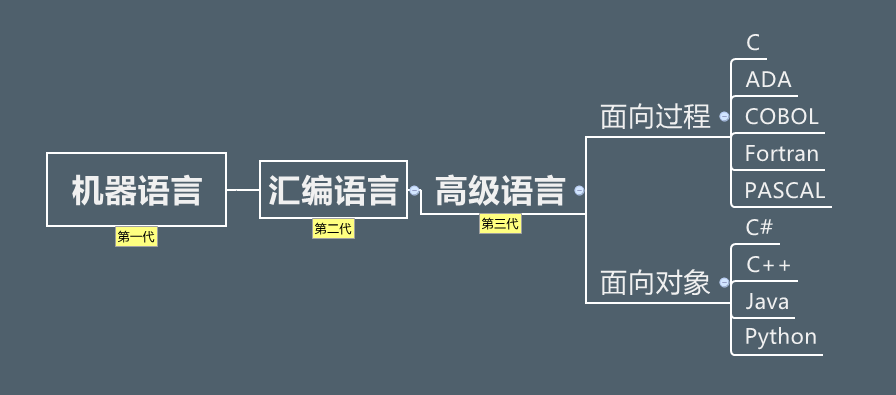
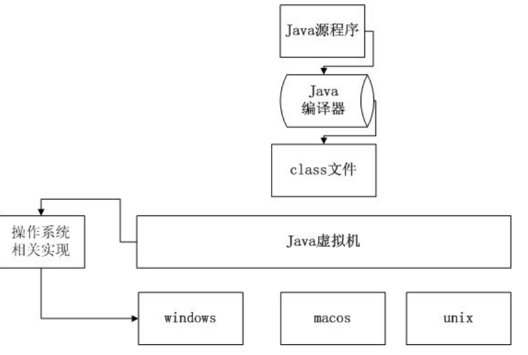
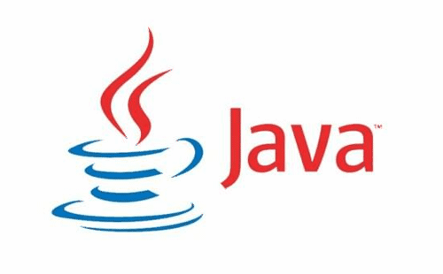

自1946年2月14日世界上首款计算机问世，第一代计算机语言“机器语言”便诞生了，它使用的是最原始的穿孔卡片，这种卡片上使用的语言只有专家才能理解，与人类语言差别极大。这种语言本质上是计算机能识别的唯一语言，人类很难理解。为了能让人们更容易理解并编写，于是便有了第二代的“汇编语言”，相比机器语言，汇编语言大大前进了一步，尽管它还是太复杂，人们在使用时很容易出错误，但毕竟许多数码已经开始用字母来代替。简单的“0、1”数码谁也不会理解，但字母是人们能够阅读并拼写的。虽然第二代计算机语言仍然是“面向机器”的语言，但它已注定成为机器语言向更高级语言进化的桥梁。当计算机语言发展到第三代时，就进入了“面向人类”的语言阶段。你可以阅读、并直接用人类的语言来输入。对我们汉语来说，目前还不能用中文汉字来输入指令，这主要是因为中文的输入还没有一个非常好的手段。第三代语言被人们称之为“高级语言”。高级语言是一种接近于人们使用习惯的程序设计语言。它允许用英文写计算程序，程序中所使用的运算符号和运算式子，都和我们日常用的数学式子差不多。高级语言容易学习，通用性强，书写出的程序比较短，便于推广和交流，是很理想的一种程序设计语言。我们今天讲述的就是第三代语言“高级语言“中的Java语言。


1.JAVA语言的诞生！
在1991年时候，James Gosling在Sun公司的工程师小组想要设计这样一种主要用于像电视盒这样的消费类电子产品的小型计算机语言。这些电子产品有一个共同的特点：计算处理能力和内存都非常有限。所以要求：语言必须非常小且能够生成非常紧凑的代码，这样才能在这样的环境中执行。另外，由于不同的厂商选择不同的CPU，因此，要求该语言不能和特定的体系结构绑在一起，要求语言本身是中立的，也就是跨平台的。最初这个语言命名为“Green”，类似于绿色软件的意思。其原先的目的是为家用消费电子产品开发一个分布式代码系统, 这样我们可以把E-mail发给电冰箱、 电视机等家用电器, 对它们进行控制, 和它们进行信息交流。开始, 准备采用C++,但C++太复杂, 安全性差, 最后基于C++开发一种新的语言Oak，Oak是一种用于网络的精巧而安全的语言, Sun公司此投标一个交互式电视项目, 但结果被SGI打败。 可怜的Oak几乎无家可归, 恰巧这时Mark Ardreesen开发的Mosaic和Netscape启发了Oak项目组的成员。他们用一种全新的语言编写了一款浏览器，得到了Sun公司首席执行官Scott McNealy的支持。在一次几位该成员组的会员在一家名为“爪蛙”咖啡的店里正在讨论给这个新的语言取什么名字时，有一个人灵机一动说：“就叫Java怎样”, 得到了其他人的赞赏, 于是, Java语言就诞生了。

1996年1月，第一个JDK-JDK1.0诞生。
新特性及更新修改：
Sun Classic VM（虚拟机）
Applet（java小应用程序）
AWT（java图形设计）
1996年4月，10个最主要的操作系统供应商申明将在其产品中嵌入Java技术。
1996年9月，约8.3万个网页应用了Java技术来制作。
1997年2月18日，JDK1.1发布。
新特性及更新修改：
1997年4月2日，JavaOne会议召开，参与者超过万人，创造当时全球同类会议规模之纪录。
1997年9月，JavaDeveloperConnection社区成员超过十万。
1998年2月，JDK1.1被下载超过2,000,000次。
1998年12月8，Java的企业平台Java EE正式发布。
1999年6月，Sun公司发布Java的三大版本：标准版（Java SE）、企业版（Java EE）、微型版（Java ME）。
2000年5月8日，JDK1.3发布。
新特性及更新修改：
2000年5月29日，JDK1.4发布。
2001年6月5日，NOKIA宣布，到2003年将出售1亿部支持Java的手机。
2001年9月24日，Java EE 1.3发布。
2002年2月26日，J2SE1.4发布，自此Java的计算能力有了大幅提升。
2004年9月30日，J2SE1.5发布，是Java语言发展史上的又一里程碑事件。为了表示这个版本的重要性，Java SE 1.5正式更名为Java SE 5.0。
新特性及更新修改：
2006年12月，Sun公司发布了JDK1.6（也被称为Java SE 6）。一直以来，Sun公司维持着大约2年发布一次JDK新版本的习惯。
2009年4月20日，Oracle宣布将以每股9.5美元的价格收购Sun，该交易的总价值约为74亿美元。但Oracle通过收购Sun公司获得了两项软件资产：Java和Solaris。2007年11月，Java语言作为服务器端编程语言，已经取得了极大地成功；而Android平台的流行，则让Java语言获得了在客户端程序上大展拳脚的机会。
2011年7月28日，Oracle公司发布了Java SE 7，这次版本升级经过了将近5年时间。Java SE 7也是Oracle发布的第一个Java版本，引入了二进制整数、支持字符串的switch语句、多异常捕捉、自动关闭资源的try语句等新特性。
2014年3月18日，Oracle公司发布了Java SE 8，这次版本升级为Java带来了全新的Lambda表达式。除此之外，Java 8还增加了大量新特性，这些新特性使得Java变得更加强大。
目前Java的版本已经更新了好几个版本，但目前市场主流还是使用的JDK8。
新特性及更新修改：